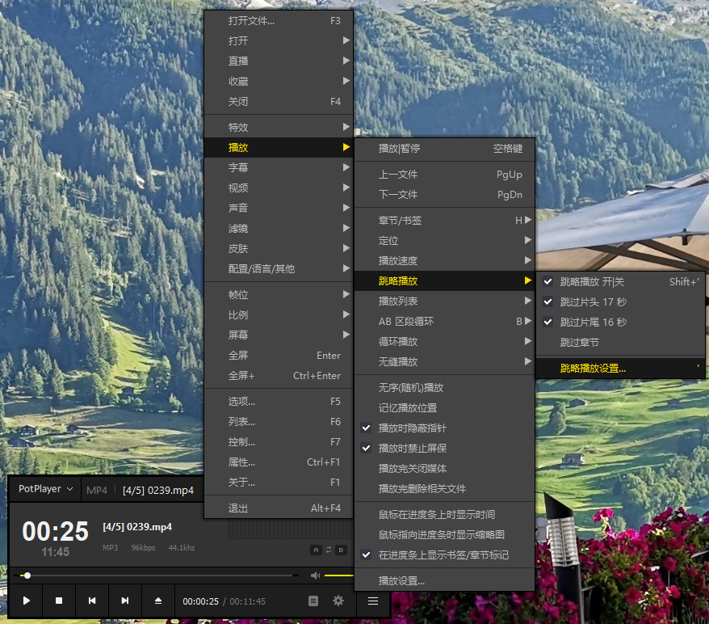
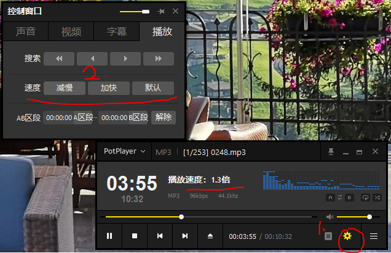
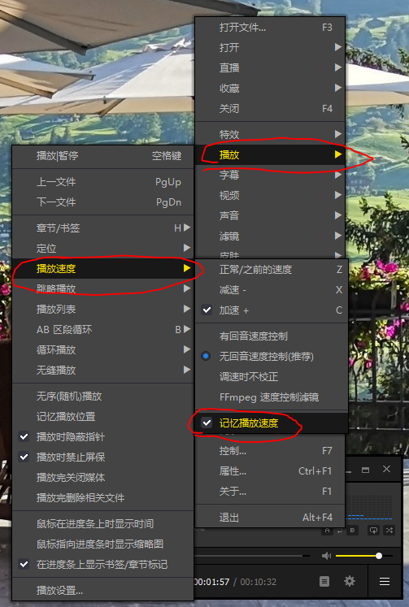

# potplayer
画质不用说，能调的不比 kmplayer 少多少还更方便它的 zune 皮肤就秒掉一大批播放器 < img src="https://pic2.zhimg.com/50/8411cbfb25b642fb641db53763b6c1ee_hd.jpg?source=1940ef5c" data-rawwidth="741" data-rawheight="486" class="origin_image zh-lightbox-thumb" width="741" data-original="https://pic1.zhimg.com/8411cbfb25b642fb641db53763b6c1ee_r.jpg?source=1940ef5c"/>
简洁大方
进度条等自动隐藏，鼠标放在那个位置才出现，鼠标不动立马淡化消失
Potplayer 下载地址
Potplayer 是一款韩国人开发的视频播放工具，优点是启动快、占用资源少、颜值高。
这款软件初始的界面可能只是比较简洁，但是我们可以通过自定义设置将其变成自己想要的样子，比如你可以设置为目前很流行的无边框模式，或者安装一些皮肤，挑选适合自己使用习惯的播放器界面。
关于定制，Potoplayer 有非常多的设置项，比如快捷键、鼠标和触摸设置、播放效果设置、字幕设置、滤镜、声音控制等，非常适合那些对视频有专业需求的人。
然其实很多人包括博主自己大部分功能都用不到，其实也不用担心，我们将其保持默认项就行了，因为本来设置项就藏得很深，不认真研究软件几乎都注意不到。
Potplayer 是一款非常好用的 Windows 视频播放软件，尤其是你对颜值很注重，强烈推荐它。
我喜欢的功能模块是可以快速设置跳过音频的片头和片尾，国产的爱奇艺万能播放器只能跳过视频和部分音频的片头和片尾.
鼠标在播放器中间右击按照如图所示操作即可设置跳略播放

设置播放速度:


# 射手影音 (SPlayer)

SPlayer 下载地址
射手影音是一款简洁无边框的现代视频播放器，支持 Windows 和 Mac，软件设计非常简洁，默认 就是无边框的播放模式，你可以无干扰的观看本地视频。
另外 SPlayer 还有两个非常独特的功能，AI 翻译以及播放网站视频。通过 AI 翻译，你可以为视频生 成英文或者中文的字幕，让视频观看更容易；播放网站视频功能允许你添加各大视频网站入口， 直接在播放器中观看视频，还支持小窗口播放，让你可以观看视频的同时做其他事情 。